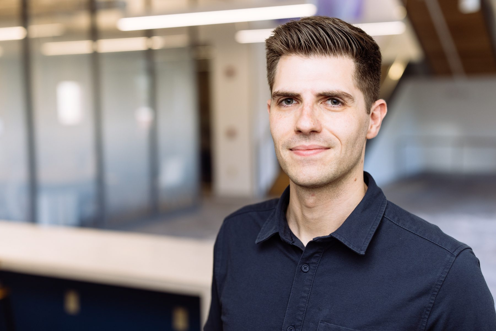

Cauê Borlina ▶ how to say my name
Gerald H. & Sharon D. Krockover New Frontiers Assistant ProfessorDepartment of Earth, Atmospheric, and Planetary SciencesDepartment of Physics and Astronomy (by courtesy)Purdue University
I study how magnetic fields, past and present, influence planetary formation, evolution, and habitability. Our lab combines a range of approaches, from paleomagnetism and laboratory analyses to numerical modeling, to investigate magnetism throughout the solar system, from the magnetic environment of the early solar nebula to the interiors of Earth and icy moons, while also exploring the role of magnetism in the future of space exploration.
PhD, Planetary Science, MITBSE, Aerospace Engineering & Minor in Physics, University of Michigan

Join the Purdue Magnetics Lab. I will be recruiting 2 PhD students for Fall 2027. Feel free to reach out to discuss potential opportunities.
cborlina@purdue.eduPurdue Magnetics Laboratory
Meet the people of the PMag Lab
Magnetic fields across the solar system
Papers
Full and current list on Google Scholar.